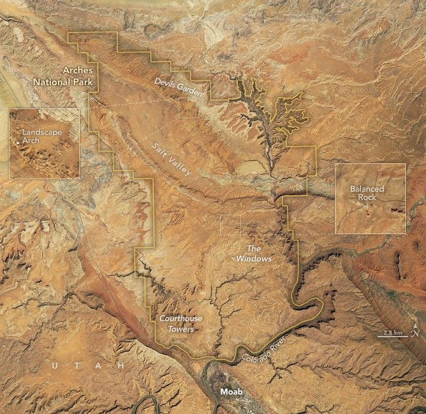

The Arches That Salt Built
Arches National Park is celebrated for its many natural arches, pillars, and windows formed from towering monoliths of red sandstone. The striking rock features, a photographer’s dream, jut from flat, arid landscapes found north of Moab in southeastern Utah. In an area twice the size of Washington, D.C., time, water, and erosion sculpted more than 2,000 sandstone arches, giving this area the highest concentration of rock arches in the world.
Most of these arches—including the iconic Delicate Arch—were chiseled from blocks of Entrada Sandstone, a rock type formed 150 million years ago from dunes within a large coastal desert. Standing as steep cliffs and huge blocks of rock that make up many of the park’s tallest features, the erosion-resistant layer stands out in satellite imagery, appearing as distinct wrinkle-like ridges flanked by dark shadows.
The images above were captured by the OLI (Operational Land Imager) on Landsat 8 on April 9, 2025, with Entrada Sandstone features visible in several parts of the park. The 400-foot (122-meter) Queen Victoria Rock and 500-foot Tower of Babel stand out clearly in the detailed view of the Park Avenue and Courthouse Towers section of the park. A photograph below shows the same features from the ground, where the Tower of Babel and Queen Victoria Rock stand as tall walls of red rock on the edges of a stream valley with blue sky visible above.
In the center of the satellite image, shadows cast by Balanced Rock and several arches in the Windows section of the park are also visible. In the upper part of the image, more Entrada Sandstone features jut up in the Devils Garden portion of the park, home to Landscape Arch. With a span of 290 feet (90 meters), the feature is one of the longest natural arches in the world.
Salt Valley, visible as the wide band of gray and orange across the center of the satellite image, exposes rocks from the Paradox Formation, an underlying layer of salt and other evaporites that are some of the oldest rocks in the park. In the Salt Valley area, the weight of the overlying rock formations caused these buried evaporites to liquefy and flow at times, squeezing the salt upward into a dome-shaped bulge called a salt anticline. When the protrusion fractured and collapsed, it formed the modern-day valley and exposed some of the evaporites to the surface.
Paradox Formation evaporites also played a key role in the development of the park’s arches. As salt beneath the surface bulged upward into domes, the overlying sandstone fractured into a distinctive pattern of parallel lines, as seen in the Devils Garden area. Over time, erosion of these narrow sandstone walls of rock, or fins, produced windows, hoodoos, and arches. Water is the key ingredient that fuels erosion at Arches, infiltrating cracks, dissolving minerals, and chiseling away at sandstone as it freezes and expands during the winter and melts during the spring.
In 1956 and 1957, the writer Edward Abbey worked as a seasonal ranger in what was then Arches National Monument, living in what he described as “a little tin government house trailer.” The trailer was located near Balanced Rock, a towering boulder of sandstone precariously perched on an eroding pedestal of mudstone.
During those two years, Abbey immersed himself in the park’s remarkable landscapes. That nature had formed objects as “weird, lovely, and fantastic” as Delicate Arch, he later wrote in Desert Solitaire, “has the curious ability to remind us that—like rock and sunlight and wind and wildflowers—that out there is a different world, older and greater and deeper by far than ours, a world which sustains the little world of man as sea and sky surround and sustain a ship.”